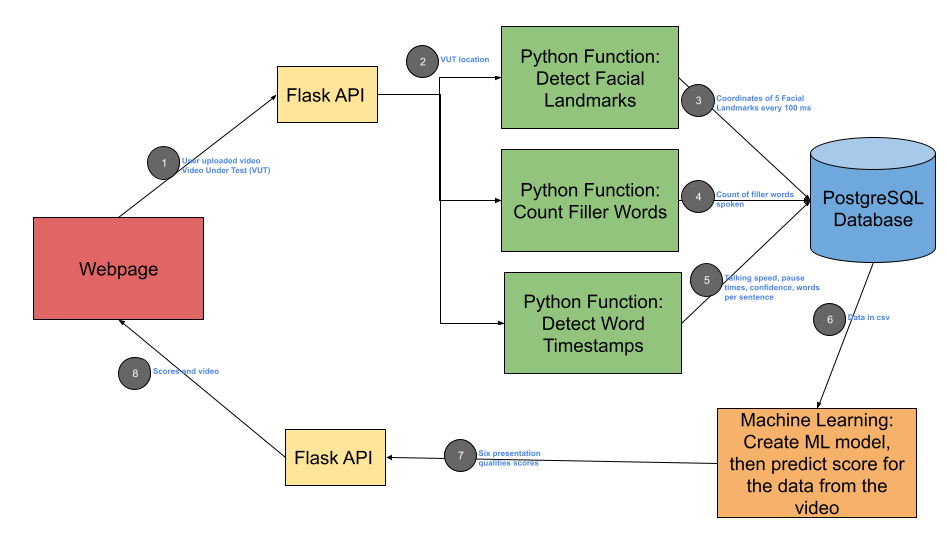

Public Speaking is a fear that about 74% of the people share. However public speaking has a tremendous impact on our lives, people who are better speakers are generally more successful and have a happier life. How can a computer analyze the quality of a speech automatically?
Speech Trainer is a machine learning based software application that provides users feedback scores to improve their presentation skills. I researched several TED talk videos and noticed that verbal delivery and body language are very important to make a presentation effective. From this, I was able to come up with six presentation qualities that I evaluated in each video. These presentation qualities are: posture, not saying filler words (such as like, um, so basically), talking speed, clarity of the words spoken, pause quality (the number and length of the pauses), and the frequency of the pause. For the posture, I stored the locations of facial landmarks such as (nose, right eye, left eye, mouth, and chin) in a frame every 100ms. Then I collected 30-second clips of longer TED talk videos and ran those videos on each of the presentation qualities. Then I created a machine learning model that will predict the user's score in each of the categories given data for each of the 6 presentation qualities. Then I created a website that evaluates and scores a user video on the presentation qualities. The prototype was correctly able to analyze the video on each of the six presentation qualities. However, the score that the machine learning produced for some of the presentation qualities was not accurate. I will try to improve the score's accuracy by collecting more data and doing more research on machine learning algorithms.
I started off by identify the six presentation qualities that I am going to score for each video. These six are: posture (movement of facial landmarks), filler words (um, basically, right so), talking speeds, pause quality (length of pauses and count), frequency of pauses, and confidence. I wrote 3 python functions that can evaluate any user video on the 6 presentation qualities. I collected 30 second clips of TED talks and other prominent speakers. I ran all the python functions on each of the video clips. I stored all the data in a database. For each video clip I assigned it a score from 1 - 10 in each of the 6 presentation qualities. From that I was able to create a machine learning model that can predict the presentation quality scores for any headshot video given the data for it.
